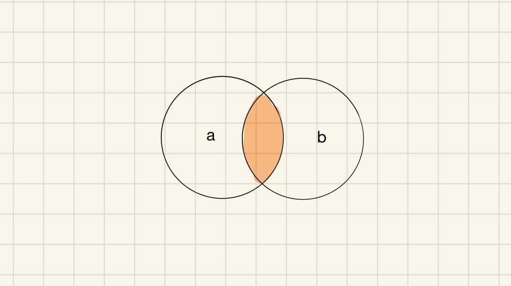

SQL如何做Join
使用SQL 时，一个常见的场景就是多个表之间的关联查询。
本文总结一下联表 Join 的多种形式。
ANSI 的 SQL 标准中，SQL join 共有 5 种，可以分为 Inner Join、Left Join、Right Join、 Full join、和 Cross Join，还有一种特殊的情况，与表自身 join 的 Self join。
在这篇文章中只考虑两张表的情况，多张表的情况同理。
两张表的结构（schema）如下：
1
2
3
4
5
6
7
8
9create table t_a (
id bigint auto_increment,
key varchar(255)
);
create table t_b (
id bigint auto_increment,
key varchar(255)
);
下文的 SQL 只是伪代码，在不同的数据库系统中不同的表示， join 关系使用文氏图表示。
Cross Join
两个表做笛卡尔积，基本不会在正式的业务中使用，主要用来测试服务的性能。
笛卡尔积就是把两个集合中的每一项两两组合，得到一个新的集合，在数据库中，就是把两张表中的数据两两组合。
1
select * from t_a cross join t_b;
Cross jojn 还有一种写法：
1
select * from t_a, t_b;
Inner Join
Innner join 表示只取两张表重合的部分，重合的部分也就是满足条件的记录。

Inner Join SQL 如下：
1
select * from t_a a inner join t_b b on a.key = b.key;
对于 Inner join，也可以看作是从上面的 Cross Join 中找出那些满足条件的记录。
Outer Join
下面将要说到的这些 Join 方式都可以统称为 Outer Join，Outer Join 是相对于 Inner Join ，Outer Join 会保留表的全部记录，至于保留哪部分，就取决于具体的 Join 方式。
Left Join 就会保留左边表的全部记录，然后只取右边表的匹配记录。Right Join 就会保留右边表的全部记录，然后只取左边表的匹配记录。Full Join 则会把两个表的记录都取出来。
Left Join
Left join 也称之为 Left outer join。
表示以 a 表为主，会将 a 表的数据全部查询出来，同时只查出 b 表中与 a 表相交的那部分。

1
select * from t_a a left join t_b b on a.key = b.key;
上面的 SQL 也可以写成：
1
select * from t_a a left outer join t_b b on a.key = b.key;
Left join 有一种变体，只获取那些不在表 b 中出现的结果，很简单，只需要做一个改动：
1
select * from t_a a left join t_b b on a.key = b.key where b.key is null;
Right Join
Right join 也称之为 Right outer join。
Right join 与 Left join 刚好相反，Right join 会以 b 表为主，会把 b 表中的数据都查询出来，同时只查询出 a 表中与表 b 相交的那部分。
1
select * from t_a a right join t_b b on a.key = b.key;
上面的 SQL 也可以写成：
1
select * from t_a a right outer join t_b b on a.key = b.key;
Right join 同样也有一种变体，只获取那些不在 a 表中出现的结果：
1
select * from t_a a right join t_b b on a.key = b.key where a.key is null;
Full Join
Full join 也称之为 Full outer join。
Full join 比较特殊，会把两张表的中数据全部查询出来：
1
select * from t_a a full join t_b b on a.key = b.key;
上面的 SQL 也可以写成：
1
select * from t_a a full outer join t_b b on a.key = b.key;
Full join 也有一种变体，只获取 a 表与 b 表相交之外的区域，刚好与 inner join相反：
1
select * from t_a a full join t_b b on a.key = b.key where a.key is null or b.key is null;
Self join
在实际场景中，还有一种比较特殊的需求，比如我们需要查出一张表中某个字段相同的所有记录，这个时候就需要用到 Self join 了。
1
select * from t_a a1 inner join t_a a2 on a1.key = a2.key;
文 / Rayjun
REF
[1] https://en.wikipedia.org/wiki/Join_(SQL)
[2] https://en.wikipedia.org/wiki/Venn_diagram
[3] https://en.wikipedia.org/wiki/American_National_Standards_Institute